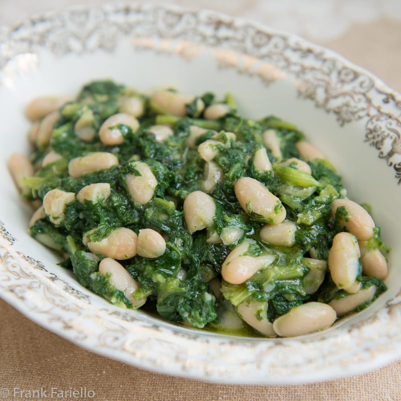

Chicory and Beans

Ingredients
- 2-3 heads chicory
- 16 oz can cannelini or borlotti beans or substitute
- 2-3 cloves garlic
- 1 chili finely chopped, or pinch pepper flakes
- extra virgin olive oil
- salt
Steps
- Wash chicory thoroughly, remove roots, and chop coarsely
- Boil in salted water 5-10 minutes until tender, reserve water
- Lightly brown garlic in skillet in generous quanity olive oil, add chili at end of cooking
- Remove garlic and chili and simmer 5 minutes
- Add beans, some bean liquid, some cooking water, and cook for roughly 5 minutes until liquid is thickening and chicory is very tender
- Season to taste and serve with starch of your choice, topped with olive oil